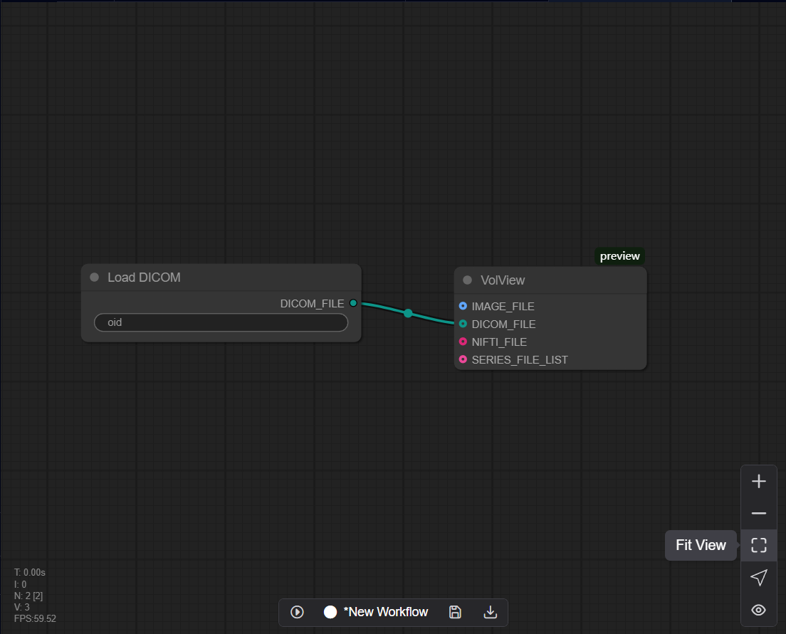
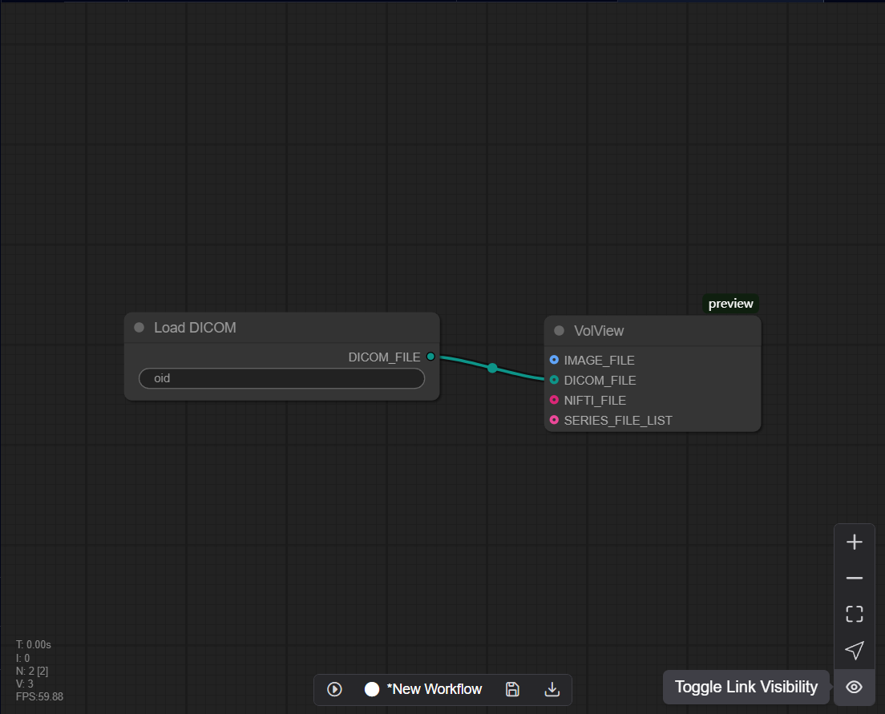
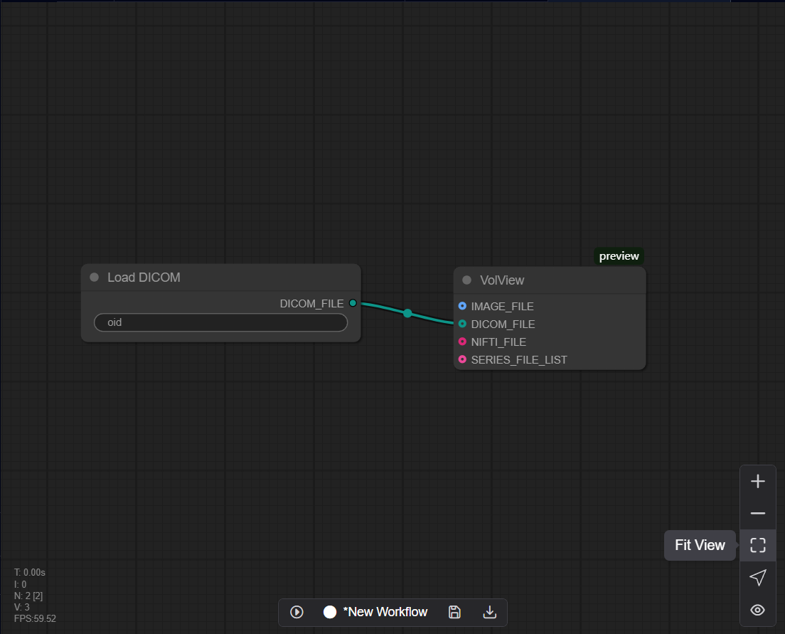
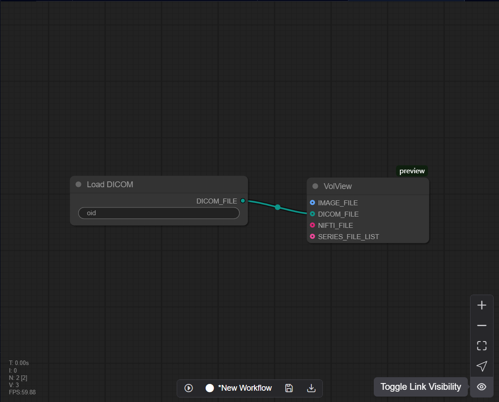

10.3 View Control Panel
Situated in the lower right corner, this section manages display settings and visualization options.
10.3.1 Zoom In / Out

10.3.2 Fit View

10.3.3 Select Mode

10.3.4 Toggle Link Visibility

Situated in the lower right corner, this section manages display settings and visualization options.

